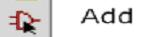
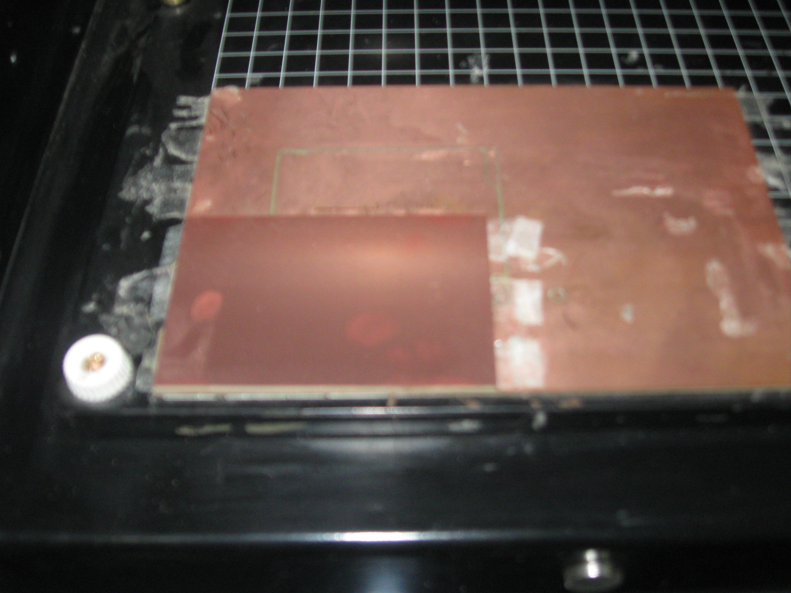

Mechanical Engineering →FAB laboratory →List Of Experiments
PCB design & fabrication
Procedure
NOTE : This procedure elaborate design & fabrication of PCB as Part1 : Design & Part 2 : Fabrication. However The Experiment and Its Simulation is entirely focusing on How to Fabricate SMD PCB boards
PART 1 : DESIGN
PROCEDURE FOR DESIGN
The Procedure describes how to prepare a layout for circuit by using various tool provided in circuit layout design software.
How to make a simple circuit in Eagle
Step-1
Start Eagle
Start -> Program -> Eagle :Layout Editor
After this Eagle Control Panel will appear(Fig -1)
This Window is main Project Manager and used to open new schematic layout & Libraries
1) Create a NEW PROJECT
Menu -> File -> New -> Schematic
Step-2
Following Window will appear
Step-3
Toolbox
At the Left side of this schematic window having Eagle Main Toolbar, As Shown in Following Picture
Fig -3
Fig-3
Using this Function user can draw the schematic for circuit
Step-4
ADDING A FRAME
The First thing that should be done is to save the empty schematic. This is done to let eagle know the name of the schematic.Now add a Frame to the schematics.
-> Click the Add-button .
-> The “add”-window pops up.
-> Select the frame named DINA4_L
-> Type in Search Box
Click OK, and the COmponent (Frame) will be attached to the mouse cursor

Fig-4
After drawing this frame about schematic diagram
Step-5

Fig-5
One schematicof HELLO 1 is given drawn given Above. Component name is given in above Schematic.
Just type these component / device name in ADD window select appropriate component & click on OK.
Detail given in image below
Step-6
Click on ADD -> Type the device(component name) name in search window. (eg. 1N4004)

Fig-6
Click on ‘OK’
Symbol will attach to the cursor then draw it.

Fig-7
This way, arrange component on proper place as given above.
Use net command to make a connection(pathway) given in the Eagle toolbar.

Fig-8
Now User can make schematic diagram using the Eagle. After completing Schematic diagram
1) Click to Menu-> File -> Switch to Board. in this Again User has to arrage Components
A switch Board window will appear
.png)
Fig-9
* Go to File - > Export
* Export window will appear as shown in fig 10.

Fig-10
* Click on Image.
* Export Image Window will Appear as shown in fig. 11
Fig-11
* Type File name with .png Extension to save it on desire location.
* To assign toolpath for the layout generated in step no.6 (Fig 9) The user has to switch over to
Linux / UBUNTU operating system.
* The .png image file which is generated in previous step can be opened in
cad.py on Linux/UBUNTU Platform to assign toolpath as For milling PCB Board on
Roland Modela minimill machine.
* The detailed Procedure of "How to mill PCB Board " on Roland Modela is given
in next Step.
This .png image will look like this in cad.py on Linux/Ubuntu platform,Given Below

Fig-12
Step-7
Then Export it as .png format & then by using cad.py / cad s/w import & give print command &
by setup the modela milling machine you will get your PCB (Printed circuit board).
Step-8
Handling Modela Milling Machine

Fig 13 Roland Modela can be used to mill circuit boards.
Step-9
User Can Import his/her Eagle circuit for milling. Stick a piece of the PCB ( using 2way sticky tap)copper
plated stock onto the cutting plane at the 1, 1 inch intersection on the grid. Open Cad.py software
(you can install cad.py in ubuntu using following steps)
Download cad, cad.py and cad.cfg from http://fab.cba.mit.edu/about/fab/dist/cad.py
Open terminal.Type Following insruction.
sudo mv cad /usr/local/bin/
sudo mv cad.py /usr/local/bin/
sudo mv cad.cfg /usr/local/bin/
sudo chmod 755 /usr/local/bin/cad
In Synaptic Package Manager install python-numpy, python-scipy, python-tk, python-imaging-tk
Click input and get the design file (.cad file) or a pre-designed png file. (eagle file)

Step-10
Tool path of the circuit will appear like this shown in image.
Step-11
Make the toolpath
- Open CAD.py in a Linux Terminal or click on the shortcut launcher of Terminal in desktop.
- Make the toolpath for the circuit. Use a 1/64" tool, which is 0.0156" decimal.
- Click CAM
- Click Output format and choose .rml (Modela output format is .rml)
- If you're using a circuit board written in Python, you'll find a line near the bottom saying "#dpi = 500 ".
- Move the ("#") sign to the line above which is "dpi(dot per inches)=200
- The "#" symbol is a comment, which will ignore the line of the command after the sign.
- Use "dpi = 200 # low resolution for previewing" for previewing toolpath contour
- Use "dpi = 500 # high resolution for machining" actual rendering and sending to Modela render)
- Set contours to -1 (meaning infinite)
- Click Contour
- This will set the toolpath for the file

Step-12
Milling a circuit
- Go to "view mode" by click on the view button on the Modela
- Tape down copper board at o,o position ( 1 inch x 1 inch from bottom left corner)
- Put 1/64 inches bit in the modela, which is 0.0156" decimal. Set it up as high as you can in the machine. Loosen existing bit with provided allen wrench.
- Clear out the memory of the Modela, by holding the both ""up" and "Down on the machine
- Open file in cad...follow instructions "Make a toolpath"
- Set the x,y axis starting point on the project to 1, 1 on the control panel in cad and then click "move"
- Lower bit close to the corner (1,1) by pressing the "Down" button. Be sure to not let the bit touch the surface.
- Loosen the hex screw that holds the bit and lower it until it touches the top surface of the board.
- Lower it slowly so the bit doesn't fall into the board and break.
- Now that the bit is at surface level, tighten screw.
- Open cad again and then send to machine.
Step-13
Cut out the Board from the PCB
- Press view button to move PCB forward. Be careful not to move board around in process.
- Clean up any shavings from first mill.
- Change bit to the 1/32 inch bit (0.0312 )
- Be sure it doesn't fall out and break
- Open back up cad.py software
- Change tool diameter to 0.0312
- Change number of contours from -1 to 1
- Change xy speed: to 0.5 and z speed: to 0.5
Remove the "#" in front of the lines...
Milling machine setting window at the right side .cad Window will look Like . user can change setting is given above.
- #cad.function = pcb.interior #z = -.065
- Press contour to render contour lines for cutting out the board.
- Press the view button place machine back in cutting mode and out of view mode.
- In program cad.py move board back to position 1, 1 by clicking the "move" button in the program.
- repeat steps above to set bit
- Lower bit close to the corner (1,1) by pressing the "Down" button.
- Be sure to not let the bit touch the surface.
- Loosen the hex screw that holds the bit and lower it until
- it touches the top surface of the board.
- Lower it slowly so the bit doesn't fall into the board and break.
- Once bit is ready click on "send to machine"
- Press the view button to enter view mode and remove your new PCB Board
- Now, user can mount SMD (surface mount device) component.
PART 2 : FABRICATION
Step-1
Step-2
Step-3
Step-4
Step-5
Step-6
Step-7
Step-8
Step-9
But if countor =-1 then it will create path as same given in below steps
Step-10
PROCEDURE FOR FABRICATION
The Procedure Describes how to fabricate PCB Layout, Design in previous Procedure import the board image which we have generated in step 6 (Fig 12) in Design procedure.
Open Terminal and Type cad.py press Enter
Following window will appear.
Press on the Input button. and select hello.RGB.45.cad file, click on open button

Fig-1
After opening the file hello.RGB.45.cad will open in this cad.py program & look like this,Given Below

Fig-2
At the right side of the image you can see the n.. number lines of code is written in python language
Scroll down the scroll bar and make changes as given below
- dpi=200 low resolution for previewing.
- #dpi=500 #High resolution for machining.
- This 2 lines are very important before starting cutting on minimill machine
- In the Experiment no.3 we have specified while exporting image in .png format from the eagle make it resolution as 500 here is same.
- Remove the comment mark # :- Given in front of the # dpi =500
- & put this # comment in front of dpi=200

Fig-3
Make changes as given in the following fig.
Fig-4
Press on render button

Fig-5
Press on Cam button(to choose output format)

Fig-6
After pressing button Output format, Drop down menu will display select .rml format is required as output format

Fig-7
Press on move button ( it will move the probe of minimill machine to desire position ) on the work area of minimill machine.
Fig-8
Before Press the countour button (This will create toolpath for the cutting probe)
Make it = -1
If we set Contour = 1 This will create only 1 tollpath as given below
Fig-8
Fig-10

Fig-11

Fig-12

Fig-13
Fig-14

Fig-15

Fig-16
Press button :- Send to machine Now actual cutting will start.
Fig-17
 


Fig 18- Before milling PCB Fig 19- After milling PCB of RGB led